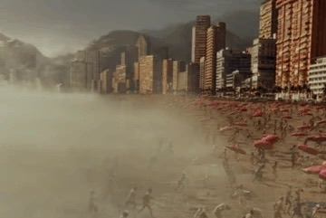
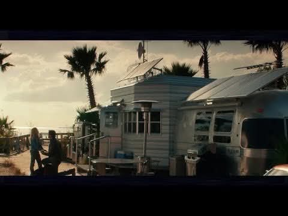
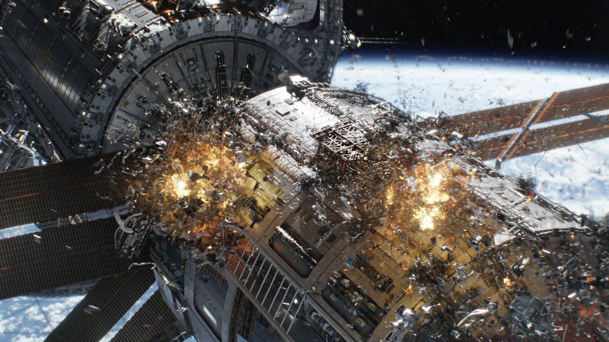
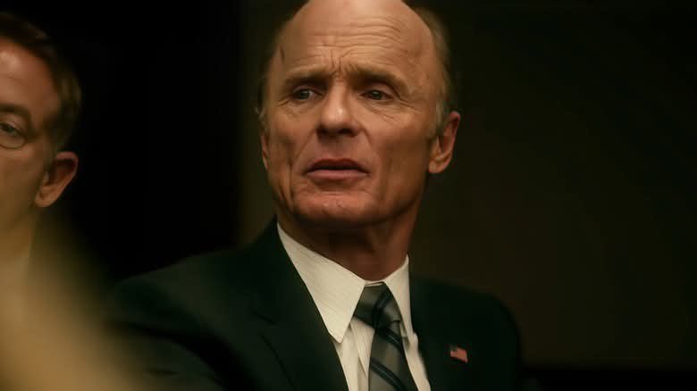
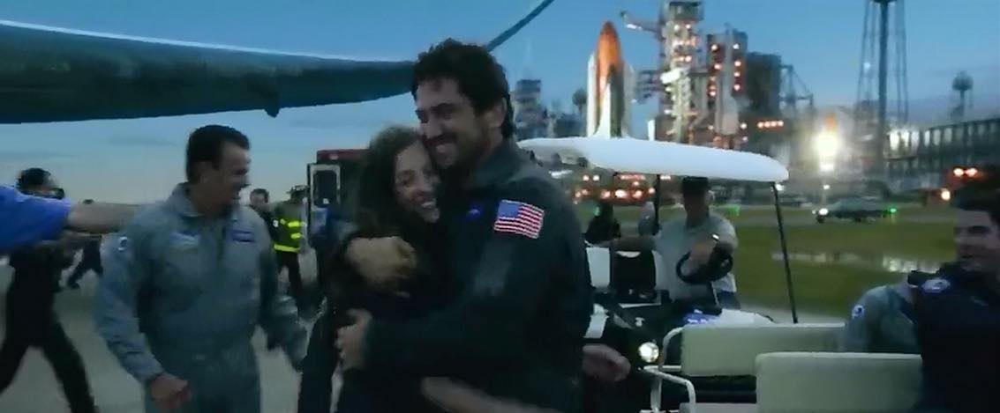

INTRODUCTION:
The movie Geostorm released by Warner Brother and produce by David Ellison together with Dean Devlin and Dana Goldberg. Starring Gerald Butler as Jake Lawson who created Dutch Boy, Jim Sturgess as Max Lawson young brother of Jake, Abbie Cornish as Sarah Wilson Agent, Alexandra Maria Lara as Ute Fassbinder new chief scientist in Dutch Boy. Daniel Wu who discovered Project Zues, Andy Garcia as President Palma, and Ed Harris as Leonard Dekkom the master mind about the virus in satellite.
The GEOSTORM is film of American in 2017, this is a disaster film about a network of satellite that controls the weather. This movie is good, every seen was thrilling, and touching.
SUMMARY:
The scientists from 17 countries led by the USA and China worked to built a thousand satellite to neutralize the storms. They gave the satellite name and its DUTCH BOY. This is saved the people from the disaster and it was built by a team led by Jake Lawson. They worried when people in Afghanistan became ice, and one of scientist in satellite station accidentally killed. Jake Lawson back to satellite station to find out what is the problem in the station. Jake find out the panel was outside the station and he get the drive, he found out someone sabotage the dutch boy. There was a disaster in other countries. Duncan was the traitor who sabotage the satellite and Secretary Dekkom. The Dutch boy was explodes and all scientists return on earth safely.
TOP FIVE FAVORITE SCENES:
1. Registan Desert, Afghanistan when discovered all people was became iced, when the disaster come to Hongkong, Brazil, India, Russia and even in Orlando USA
2. Jake’s sad farewell to her daughter to return to space shuttle.
3. where scientist Makmound accidentally dies in space shuttle
4. They found out that Secretary Dekkom was the one who committed the act of sabotage and after he was caught.
5. Where the dutch boy explodes and Jake and Ute the chief of scientist are saved by scientist Her nandez.
